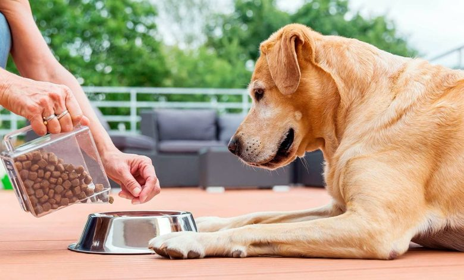

¿Cuánta comida debo darle a mi perro al día?
Una de las primeras preguntas que nos llega a la mente al tener un perro es: ¿Cuanta comida debo darle a mi perro? Es una pregunta muy obvia con una respuesta que no lo es tanto ya que depende de muchos factores distintos.
Si nos dedicas unos minutos aprenderás a calcular la cantidad de comida de tu perro lo mejor posible y de forma personalizada.
¿Qué cantidad de comida debo ponerle a mi perro?
La respuesta variará según la alimentación que reciba el animal. En caso de ser un producto comercial ya sea pienso seco, húmedo, deshidratado o cualquiera, por ley debe venir inscrita la dosificación en el producto.
No obstante, esta pauta de dosificación es para animales en mantenimiento o crecimiento en caso de que sea un producto válido para esta fase vital. No contempla estados como la gestación o la lactación (salvo que el producto sea específico para este uso). Igualmente, dentro del propio mantenimiento, hay mucha variedad individual, veremos por qué sucede esto en breve.
En caso de ser una dieta no comercial de composición no conocida, dependerá de qué estemos dando de comer al animal y en qué condiciones.
¿Cuántas veces al día debo darle de comer?
Esta cuestión va a depender de varios factores tanto del animal como de los propietarios. Por una parte, el estado fisiológico del perro (crecimiento, adulto, vejez, lactancia o gestación) y por otra la comodidad de los propietarios. La idea es llegar a la opción que proporcione mayor bienestar tanto a dueños como a perros y que no descuide los mínimos que estos requieren.
Por parte de los perros, sus requerimientos según la fase fisiológica son:
- Mantenimiento: La cantidad de comida indicada en el envase para el peso del animal dividida en 2 o 3 tomas, dependiendo del comportamiento del perro. Si este come con mucha ansiedad con dos tomas, puede ser que este pasando hambre y haya que aumentar la frecuencia. No ocurre nada si comen más de 3 tomas al día siempre y cuando la cantidad esté medida.
- Vejez: En esta etapa de la vida, los animales suelen ser menos activos, por lo que su gasto y necesidades energéticas se reducen. Esto suele manifestarse con que manteniendo la misma frecuencia de alimentación engordan. En caso de ver esto, lo más sencillo es reducir la cantidad de comida en un 10%.
- Cachorros: Una vez destetados, las necesidades energéticas son muy altas ya que son muy activos y tienen muchos tejidos que generar y además su estómago será muy pequeño. Por ello, se deben dar 3 o 4 tomas de alimento al día y ajustarlas según la edad del cachorro.
- Gestación: Las necesidades aumentan progresivamente siendo muy altas al final de esta. La opción más segura es administrar un alimento específico para esta etapa. También es preferible pasar a 3 o 4 tomas diarias ya que las necesidades son más grandes y por la compresión que ejercen los fetos, el estómago es más pequeño.
- Lactación: Las necesidades son muy grandes y por el cuidado de las crías el tiempo para comer muy pequeño y no necesariamente se tiene que adaptar al horario de tomas que tengamos establecido. Por ello, es el único caso en el que se recomienda alimentación libre o ad-libitum.
Obviamente estas tomas deben estar distribuidas de forma lo más homogénea posible a lo largo del día. La cantidad es muy recomendable que sea siempre la misma y que no se den en momentos de mucho estrés para los animales.
Ejercicio físico y alimentación
Este es otro factor importantísimo a la hora de regular la alimentación ya que cuanta más energía se consume más energía se gasta y al hacer ejercicio se aumenta la cantidad de masa muscular, lo cual también aumenta el gasto energético.
Lo ideal es que el ejercicio y la alimentación sean lo más homogéneo posible a lo largo de la semana. No obstante, es muy normal que esto no suceda ya que los fines de semana tenemos más tiempo para bajar a nuestra mascota y esta pasa más tiempo en la calle.
Frente a la posibilidad de aumentar la cantidad de alimento estos días, es más recomendable que sea un aumento en la toma de todos los días para poder tener un mayor control, ya que las variaciones de peso no son hechos inmediatos sino tendencias a lo largo del tiempo.
¿Por qué no se recomienda darles de comer una sola vez al día?
Son muchos los motivos por los que esta práctica es desaconsejable. El perro pasará una parte importante del día con hambre y se enfrentará a una comida muy voluminosa. Por el hambre que tiene la ingerirá con ansiedad y tendrá el estomago lleno y posiblemente dilatado por encima de lo recomendable. Este tendrá más facilidad para torsionarse (lo cual es una urgencia quirúrgica) o simplemente terminará vomitando.
Por esta velocidad de ingestión aumentada, la masticación del alimento también se vera comprometida por lo que su digestión y absorción serán más dificultosas y peores. Además, el perro pasará gran parte del día con hambre, lo cual a nivel comportamental le supondrá un problema.
¿Qué sucede si mi perro engorda o adelgaza?
No hay que preocuparse en absoluto. Las fórmulas con las que se calculan las necesidades de perros y gatos se aplican relativamente mal al animal individual, pero funcionan muy bien en poblaciones. Por lo que es totalmente normal que un perro engorde o adelgace.
En este caso, el propio producto nos informará que hay que bajar o subir la ración un 10% respecto a la cantidad recomendada. Una vez realizado este cambio debemos esperar unas semanas para valorar si ha habido cambio en la tendencia de subir o bajar peso.